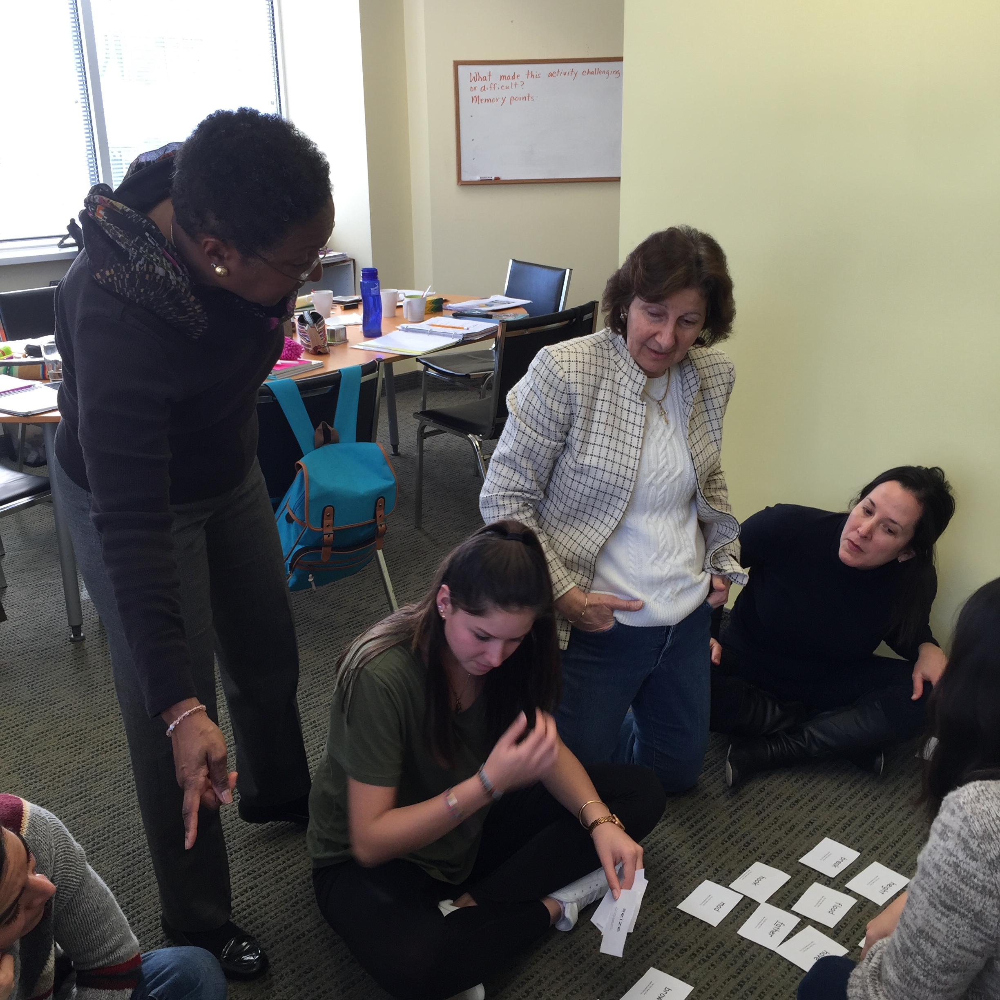

English Now! Conversation Courses offer two to six hours of instruction per week and are available during the daytime or on Saturdays. These courses are designed for English learners from high beginner to advanced levels. Classes focus on improving conversation ability with an emphasis on proper use of English grammar, vocabulary development, pronunciation improvement and accent reduction.
The maximum number of students per class is four, ensuring that each student receives significant attention. For a complete course description of our Conversation Courses, please click here.
An Innovative Approach to Conversation: Our Conversation Courses are team-taught by two instructors on a regular basis once or twice per month. This innovative model provides students with the opportunity to interact with a second native speaker of English, as well as to meet and interact with a larger number of international students.
Our Conversation Plus classes include one or more private lessons per week, in addition to group classes. Get extra help on your specific needs. Work on pronunciation, your specific grammar issues, writing, or other topics. Consider using your Converation Plus private lesson(s) to prepare for the TOEIC Speaking & Writing test or TOEFL test to achieve an internationally-known certification of your English proficiency.
Dates: Conversation Courses meet two days per week, for two hours each session. A few classes – particularly at lower levels – meet more frequently and/or for more time each session (at a higher tuition rate). Conversation Plus adds one or more private lessons per week, scheduled at your convenience.
Hours: Conversation Courses meet for two hours per session, for a total of four hours per week. Conversation Plus adds a fifth hour, each week (or add more private lessons, if you need).
Schedules: English Now! has as many as seven of these classes offered at any given time. Call us for enrollment options, which will be based on your level of English proficiency, your interests, and class availability.
Tuition: Tuition for Conversation Courses is $320 for four weeks. Many classes require a book, which costs $30. Conversation Plus classes are an extra $130 for a one-hour private lesson, per four weeks, or $450 total for four weeks. Note: you may miss one class during each four-week cycle, and make it up at the end of the four weeks, without being charged extra tuition.
Registration Fee: One-time registration fee of $40.
Please also see information regarding our English for Professionals Programs, which offer great conversation practice in a small classroom environment in the evenings and on Saturday mornings.
Please note that in addition to tuition there is a one-time $40 registration fee for all new students.
For more information, please contact us.